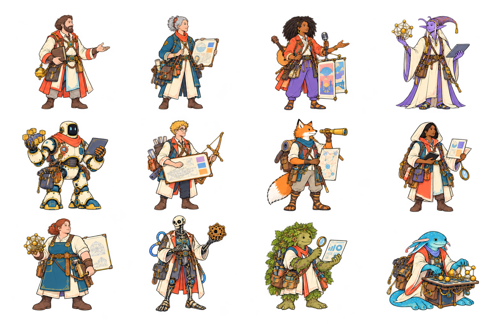
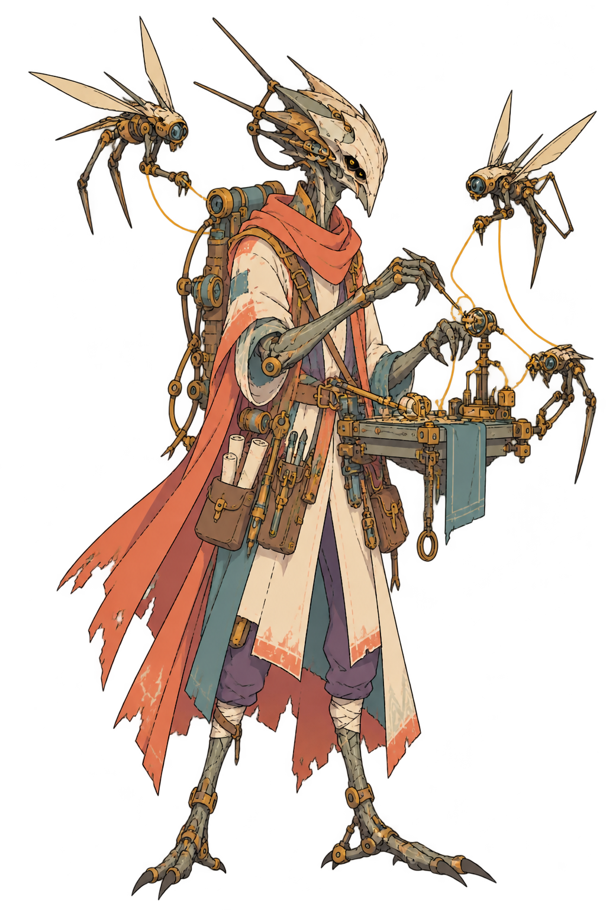
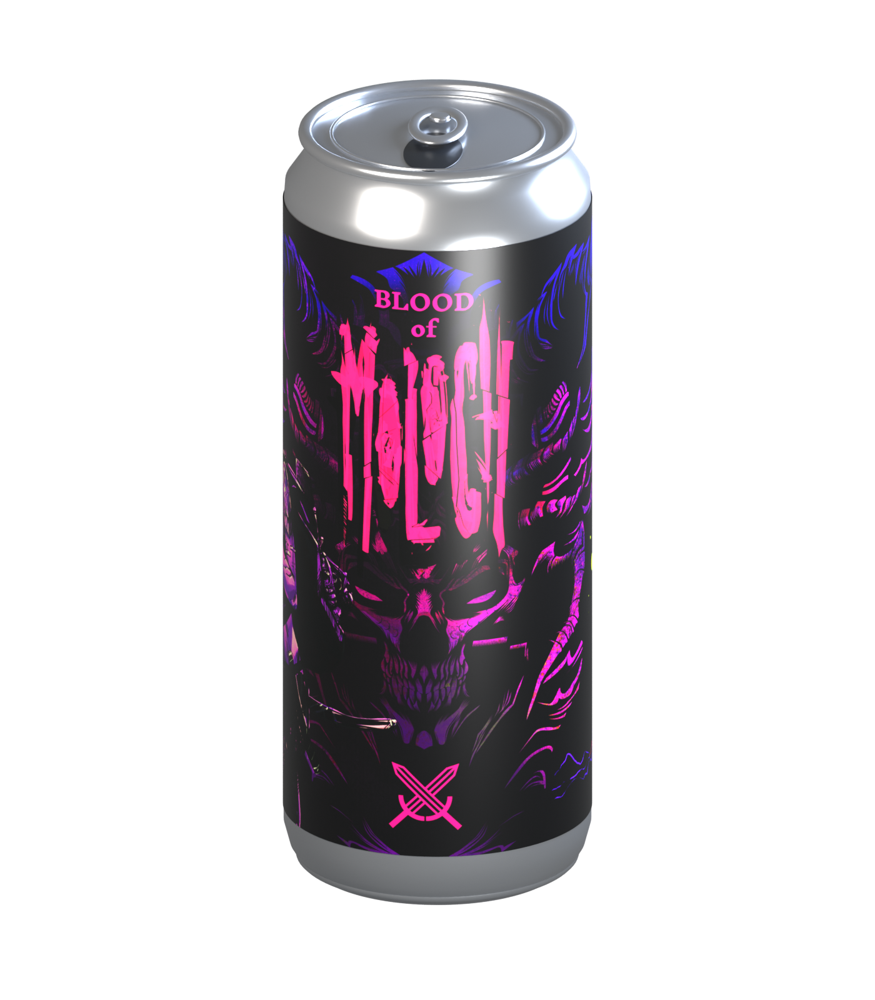

19 field notes to read, compare, and mark up. This standalone extract follows its own sequence. The same material also appears within the 35-page integrated Field Guide.
WORKBOOK / 01 OF 19
The Guild we build together
History, people, and a living experiment in working together
A cooperative beginning
RaidGuild took shape in 2019 from Odyssy, a three-person agency with Ven, Dekan, and Sam already experimenting with cooperative work. They pooled income in a multisig and used light governance to decide what to fund. The question was larger than one agency: could builders own and govern a network for their work together?
MetaCartel offered a place to try those ideas. James Young and Peter Pan helped draw Odyssy into that early community. James Waugh and Cooper Turley were part of the wider MetaCartel circle connecting people, ideas, and experiments. Building in that company led to Pokemol and then DAOhaus: tools for making DAOs easier to launch and use.
The first party grows
A DAOhaus prototype received a $1,500 community award at a Berlin hackathon. RaidGuild’s treasury also drew on leftover PokeMol grant funds and ETHBerlin funds. The group put shared resources toward coordination tools and a wider builder network.
An early public introduction at ETHDenver brought prospective collaborators and clients. Early RaidGuild members included Cooper Turley, Elliott Conway, Yalor (yalormewn), Hammad Jutt (meta_dreamer), peth, and Scottrepreneur.
Different hands on the wheel
Cohorts helped newcomers find their party, and elected stewards took care of shared operations. Successive brand stewards—Ven, TW, Suede, and Louchi—gave the Guild different looks and stories. Each era brought new energy while the builder-owned, community-first idea remained central.
The Field Guide turns that living history into places and characters. Queen Raida scouts and scribes; people make the judgments and build trust. Moloch gives a face to coordination failure. The Guild keeps changing because its members keep making things together.
The shared treasury was only one part of the experiment. A builder-owned network also needs people to bring in work, assemble teams, care for tools, keep records, and make room for newcomers. Cohorts and stewardship grew around those needs. Membership meant taking part in shaping the organization as well as benefiting from it.
The Guild also developed a Marshall Islands DAO LLC to connect onchain governance with the practical world of client relationships, contracts, liability, and taxes. The aim was to give collective work a structure that could meet people and institutions where they already operate.
The work continues to change. A network first known for Web3 services and DAO coordination tools now includes applied AI, games, and experiments that cross into physical making. New members bring new obsessions and form new parties. The through-line is ownership: builders helping decide how their network works and sharing in what they create.
THREAD OF THE STORY
2019 A cooperative agency and MetaCartel work frame the Guild idea.
Early tools Pokemol leads toward the DAOhaus prototype and Berlin award.
Opening out RaidGuild begins with the award; ETHDenver brings a public introduction.
Growing practice Cohorts and stewardship develop as the builder network evolves.
Beyond the first raids AI, games, and community offshoots open new paths for the builder network.
RaidGuild is for people who see something worth making and start figuring out how. Bring curiosity, initiative, and the willingness to bring other people into the work.
You’ll probably feel at home if you…
Make things because you can’t leave an interesting idea alone.
Find collaborators, ask useful questions, and follow through.
Share what you learn and help the next person get further.
Enjoy weird worlds, deep rabbit holes, and people with unusual obsessions.
Can challenge an idea, hear a challenge back, and keep building together.
You may find it frustrating if…
You want someone to assign your next task and manage every step.
You expect joining a community to produce a steady queue of paid work.
You need everything settled, polished, and predictable before participating.
You’re mainly here to extract contacts, attention, or opportunities.
High agency is a party skill.
Take initiative. Make your intentions visible. Ask for help when you need it. Respect other people’s time and boundaries. Finish things—or tell your party what changed.
Party agreements
Carry your share
Make a clear commitment and follow through. If scope, time, or capacity changes, say so while the party can adjust. Ask for help before you are stranded. Leave notes and a handoff someone can use.
Challenge ideas. Respect people.
Disagree with substance. Ask what you might be missing and make room for quieter voices. Be direct without humiliation. A joke does not erase a boundary: respect consent, privacy, and a clear no.
Share credit and context
Credit collaborators. Set expectations about ownership, payment, and time before work gets tangled. Document useful discoveries. An introduction is not a claim on someone’s labor.
Make repairs
Speak up early when something goes sideways. Describe what happened, listen to its impact, own your part, and agree on a concrete repair. Ask a trusted steward for support when you cannot resolve it together.
Before you set out
What can your party expect from you? What do you need from them? Have that conversation before the first encounter.
If that sounds exhausting, fair enough. If it sounds like your people, pull up a chair.
STR Shipping · DEX Adaptation · CON Follow-through · INT Systems · WIS Judgment · CHA Connection. Suggested archetype stats. Redistribute freely. Choose, combine, and change paths freely. They name useful directions, not levels or gates.

Account Manager · Client steward
Cleric
The Cleric makes a client relationship feel cared for without promising what the party cannot deliver. They listen for the real need, translate a broad wish into decisions a team can act on, and keep expectations visible when scope or timing changes. An Account Manager knows that trust grows through clear follow-through, including an honest account of what remains unknown.
In a Raid, the Cleric is often the bridge between a client and the builders. They organize useful conversations, record decisions, check who owns each next step, and help the party notice when a quiet concern needs attention.
When the quest changes, the Cleric does not hide the turn. They bring the new information to the client and party, check the agreement, and help everyone choose a responsible next step.
Carekeeping. Keep promises visible, notice when a teammate needs help, and make difficult conversations easier to begin.·Client Stewardship. Translate a client’s needs into clear agreements, calm updates, and a dependable point of contact.·Rituals. Design check-ins and handoffs that help a scattered party stay connected through the work.
Signature moves
Name the quest. Turn a client’s scattered needs into a short, agreed brief with outcomes, owners, and open questions.
Keep the campfire lit. Send a candid update that names completed work, risks, decisions needed, and the next meeting.
Useful gear. Ledger of Promises (decision log), a shared scope, conversation notes, and the party calendar.
STR 9DEX 11CON 12INT 13WIS 15CHA 16
Support · Party support
Monk
The Monk notices the work between the visible tasks. Support can mean preparing a room for a good discussion, making sure a new contributor has context, or tracking a loose end before it becomes a blocker. They bring patience and practical attention to a party that may be moving quickly across disciplines.
On a Raid, the Monk helps the party keep its rhythm. They gather decisions where people can find them, follow up on commitments, and ask whether each participant has what they need to contribute. They can help surface a stalled handoff early and bring the right people together to resolve it. Their best work leaves the group more capable, not more dependent on them.
The Monk knows that support is a skill rather than an afterthought. They can spot a missing owner, welcome a newcomer into the context, and help a busy group finish what it began.
Onboarding. Help new builders find the right doorway, people, and next action without losing their curiosity.·Troubleshooting. Trace a blocked workflow patiently, gather useful evidence, and bring the right specialist into the room.·Community Care. Hold space for questions and feedback while keeping support routes and expectations easy to understand.
Signature moves
Clear the path. Collect missing context, access, and decisions before they slow the next piece of work.
Hold the circle. Make room for quieter voices and end a meeting with named actions and owners.
Useful gear. Compass of Context (shared notes), a project board, access checklist, and short check-ins.
The Bard helps useful work find the people who need to understand it. Marketing here begins with listening: who is this for, what changed, and what evidence supports the story? The Bard can shape a launch, a community update, or a simple explanation of an unfamiliar product. They give the work a memorable voice while staying faithful to what the party actually built.
On a Raid, the Bard asks the builders for concrete details, the client for its audience, and users for language that sounds like real life. They plan channels and timing, draft copy, and check that claims can be supported. A good campaign is a bridge between a finished artifact and a community able to use it.
A message succeeds when the right people know what the work does, why it matters, and where they can learn more.
Storytelling. Turn actual Guild work into memorable narratives with clear sources, voices, and an invitation to participate.·Audiovisual. Blend AI writing, audio, image, motion, and video tools with human editing to make stories travel.·Campaigns. Coordinate social posts, releases, and community moments so a useful message reaches the right people.
Signature moves
Find the refrain. Turn a complex project into one clear promise supported by examples and limits.
Call the audience. Prepare a launch note, gather feedback, and revise the next message from what people understood.
Useful gear. Songbook of Evidence (message map), interview notes, accessible images, and an editorial calendar.
STR 9DEX 12CON 11INT 14WIS 13CHA 17
Smart Contracts · Contract craft
Wizard
Their magic is careful reasoning about what should happen, what could go wrong, and what happens when the unexpected arrives. Code that manages shared resources deserves clear requirements and review before anyone relies on it. A Wizard is most useful when they can explain the system to the people it affects, not only to other contract developers.
On a Raid, the Wizard turns product intent into testable behavior. They ask about permissions, failure states, upgrades, and what should remain immutable. They coordinate with designers and other builders so the interface tells the truth about the contract underneath. When it is time to hand over, they document assumptions, tests, and operational limits.
Before deployment, the Wizard asks the party to rehearse what happens when an assumption fails. That conversation can change a permission, a test, or a handoff before the cost rises.
Contract Craft. Write and test smart contracts whose permissions, state changes, and failure paths a party can explain.·Protocol Design. Shape system rules and interfaces so builders can coordinate without hiding the important tradeoffs.·Security. Review assumptions, threat paths, and tests before powerful code crosses the boundary into production.
Signature moves
Trace the spell. Write a test for the intended path and the edge case that could surprise the party.
Open the grimoire. Explain permissions, risks, and contract behavior in language the client can use.
Useful gear. Grimoire of Edge Cases (test suite), specifications, version control, and deployment checklist.
The Warrior builds and ships a concrete piece of the quest. The name suggests courage, but the useful habit is disciplined craft: choose a tractable slice, make it work, and leave enough context for another person to continue. They face constraints directly and make progress visible rather than hiding uncertainty behind confidence.
On a Raid, the Warrior works with design, product, and technical companions to turn a brief into working software. They clarify acceptance criteria before starting, show an early version, and respond to feedback while there is still room to change course. They keep the branch reviewable and the handoff understandable. When pressure rises, they protect the party by naming tradeoffs instead of silently cutting corners.
A small, clear change with evidence of what it does can be stronger than a heroic rush to finish alone.
Frontend Building. Turn a design into a fast, accessible interface that real people can navigate and use.·Product Engineering. Carry a feature across components, data, tests, and release until the outcome works end to end.·Integration. Connect tools and services carefully, making failures visible and handoffs clear to the next builder.
Signature moves
Take the first step. Ship a small end-to-end slice so the party can test the real shape of the solution.
Raise the shield. Call out a dependency or risk early, with a practical option for moving forward.
Useful gear. Forge Kit (local development setup), issue notes, version control, tests, and a clear demo.
STR 17DEX 13CON 15INT 13WIS 12CHA 10
Design · Visual direction
Archer
The Archer brings design into focus. They study what a person is trying to do, decide where attention should land, and give an experience a visual language that supports the task. It calls for understanding the audience, the content, and the constraints of the medium. The Archer can make complexity approachable while keeping the distinctive character of a project alive.
On a Raid, the Archer turns research and product goals into sketches, flows, and detailed designs that builders can implement. They invite feedback early, explain why a choice helps the user, and check the result in the working product. They notice where copy, contrast, spacing, or state changes can alter meaning. Their handoff gives the next person a path rather than a picture with unanswered questions.
The Archer shares work in progress because a sketch can reveal a bad assumption cheaply.
Product Design. Find the user’s real target, prototype a path, and sharpen the interface through observation.·Visual Identity. Build a coherent visual language that makes the Guild or a client recognizable across touchpoints.·Creative Technology. Mix design, code, and interactive media to make an idea tangible before the party commits.
Signature moves
Set the sightline. Sketch a clear path through one important user task before polishing every surface.
Test the target. Compare a design with a real interaction and adjust where people hesitate.
Useful gear. Sightline Map (wireframes), research notes, design files, component guidance, and accessibility checks.
The Hunter looks for work where the Guild can be genuinely useful. BizDev is not a race to collect leads; it is a practice of finding a fit between a person’s problem and a party able to solve it. The Hunter asks good questions before making an introduction.
On a Raid, the Hunter may start the relationship and help shape its first scope. They identify decision makers, surface budget or timing constraints, and bring the right specialists into discovery. They keep the conversation honest about capability and availability. A strong handoff gives the client a clear path to a proposal and gives the party enough context to decide whether to take the work.
They listen for whether the conversation produced a real next step, and they can gracefully close an opportunity that is not right for this party.
Proficiencies. Discovery · Relationship building · Opportunity qualification · Handoff
Optional paths
Opportunity Mapping. Scan the terrain for aligned clients, collaborators, and problems the Guild can actually help solve.·Partnerships. Build durable relationships through clear expectations, mutual benefit, and a useful next conversation.·Scoping. Turn a promising lead into a concrete brief with ownership, constraints, and a sensible first step.
Signature moves
Read the tracks. Write down the need, the people involved, and why this party might be a good fit.
Open the gate. Make a warm introduction with a precise next conversation and no invented commitments.
Useful gear. Trail Map (relationship map), discovery notes, fit checklist, and a thoughtful follow-up.
STR 11DEX 14CON 12INT 12WIS 15CHA 17
UX/User Testing · User pathfinder
Ranger
The Ranger learns how an experience works for the people who use it. UX and user testing begin with observation: where does someone hesitate, what language do they use, and what do they expect to happen next? The Ranger can work with a prototype, a live product, or even a paper sketch.
On a Raid, the Ranger defines a useful question, recruits or identifies fitting participants, and gives them a realistic task. They listen more than they lead. Afterward they separate what was observed from what they infer, then share patterns the party can act on. They work with the Archer and Warrior to test whether a revision removes friction.
The Ranger makes findings specific enough to guide a change. They can say which participant struggled, with which task, and what happened, without pretending that one session proves a universal truth.
Proficiencies. User interviews · Usability testing · Synthesis · Research reporting
Optional paths
User Research. Listen to people doing the work, document patterns, and bring evidence back to the party.·Journey Testing. Walk the full path a user takes, including confusing branches and the moments where trust breaks.·Accessibility. Test practical access across devices, inputs, and abilities, then help the team fix the friction.
Signature moves
Scout the route. Watch someone attempt a task and record the point where expectation and interface diverge.
Mark the trail. Turn observations into a prioritized list of changes and questions for another test.
Useful gear. Field Journal (task scripts), consent notes, findings board, and recordings when appropriate.
The Paladin builds the services and systems behind the visible experience. Backend development asks for sturdy interfaces, sensible data models, and careful handling of failure. The armor in the illustration suggests reliability, but reliability comes from choices that can be explained and tested.
On a Raid, the Paladin works with the party to define contracts between components, choose where data lives, and protect sensitive operations. They discuss scale and security in proportion to the real task. They write tests around critical behavior and document the assumptions behind an integration. When they deliver, they make monitoring and recovery part of the handoff so the system can keep serving users.
The Paladin treats maintainers as future users. They leave names, logs, and recovery steps that make sense to someone who did not design the original service or sit in the planning meetings.
Proficiencies. API design · Data modeling · Service reliability · Security
Optional paths
Service Design. Build sturdy backend boundaries so data and responsibilities move safely between the right systems.·API Craft. Give other builders clear contracts, meaningful errors, and documentation they can use without divination.·Reliability. Watch performance and failure modes, then make recovery part of the design instead of an afterthought.
Signature moves
Guard the passage. Define a clear API boundary with useful errors and permission checks.
Keep the watch. Add a test and a signal that make an important failure visible before it spreads.
Useful gear. Shield Wall (API specifications), schemas, logs, tests, and a maintainer runbook.
STR 16DEX 11CON 17INT 16WIS 14CHA 10
DevOps · Systems restorer
Necromancer
The Necromancer keeps delivery systems alive and can bring a faltering service back into working order. DevOps touches deployments, infrastructure, observability, and the small rituals that make changes safer. The title is theatrical; the work is practical. They look for repeatable ways to move software from a developer’s machine into an environment people can trust, and they prepare for the day a process breaks.
They ask who receives an alert, where secrets live, and what evidence shows a service is healthy. They coordinate with builders before changing infrastructure that others rely on. Their goal is to leave the party with a system they can operate, not a set of incantations only one person knows.
The Necromancer prepares for ordinary mistakes as well as dramatic outages. A calm, rehearsed recovery path lets a team make necessary changes without depending on luck or a single keeper.
Infrastructure. Keep environments, deployment paths, and secrets organized so a party can build without surprises.·Resilience. Prepare monitoring, backups, and recovery moves that make an outage survivable for the people affected.·Release Operations. Automate repeatable releases and leave clear rollback steps when the spirits in production stir.
Signature moves
Raise the service. Practice a repeatable deploy and rollback before a critical release.
Read the omens. Connect logs and health signals to a clear response when a service falters.
Useful gear. Resurrection Scroll (rollback plan), pipelines, dashboards, backups, and a recovery runbook.
The Druid finds patterns in data and helps others understand what those patterns can and cannot say. The Druid asks where the data came from, what is missing, and which decision the analysis should support. Their craft connects careful measurement with human questions.
On a Raid, the Druid works with the client and party to define a useful measure, inspect data quality, and choose an analysis that fits the available evidence. They make assumptions explicit and share results in a form others can question. They resist dramatic conclusions from a thin sample. The best answer may be a small experiment or a better question, not a dashboard with every possible number.
The Druid can explain a chart without asking the audience to trust the chart alone. They point to the source, the method, and the alternative explanations worth considering before action.
Proficiencies. Data quality · Analysis · Visualization · Experiment design
Optional paths
Analytics. Turn messy activity into honest measures and explanations that help the Guild choose its next move.·Machine Learning. Build and evaluate models around useful questions, representative examples, and human judgment at decision points.·Data Engineering. Shape reliable pipelines and definitions so others can find, trust, and reuse the same evidence.
Signature moves
Listen to the grove. Audit a dataset for missing context before promising a conclusion.
Map the seasons. Turn a trend into a clear chart, its caveats, and a decision the party can test.
Useful gear. Grove Atlas (data dictionary), queries, notebooks, charts, and an assumptions record.
STR 10DEX 11CON 12INT 17WIS 17CHA 11
DAO Consultant · DAO guide
Mystic Alchemist
The Mystic Alchemist helps a DAO think through design and coordination questions. A DAO Consultant works where governance, software, incentives, and human practice meet. There is no single recipe that fits every community. Their advice should leave the community able to choose for itself.
On a Raid, the Alchemist may facilitate discovery, compare governance options, and help translate a decision into workable steps. They ask who has authority, how participation happens, and how shared resources are protected. They make tradeoffs legible rather than presenting a tool as an answer to every problem. They can guide a pilot and invite feedback before a process becomes durable.
The Alchemist brings people into the design of the process itself. Those affected by a rule should be able to see its tradeoffs, question its assumptions, and help decide how to improve it.
DAO Design. Help a group choose decision rules, roles, and tools that fit how its people actually cooperate.·Facilitation. Guide difficult choices toward clear options, recorded agreements, and room for dissent before commitment.·Experimentation. Try small governance changes, observe their effects, and carry the learning into the next cycle.
Signature moves
Mix the ingredients. Lay out two governance choices with benefits, risks, and who does the work.
Test the potion. Run a small, reversible pilot before asking a community to adopt a permanent process.
Useful gear. Alchemist’s Bench (decision map), workshop notes, governance drafts, and a review plan.
The Warlock steps through a working portal into the client’s world. A Forward Deployed Engineer learns the real workflow beside the people who use it, then builds in context. Their magic joins product discovery, engineering, and delivery: a useful system, not a distant demonstration.
On a Raid, the Warlock learns the tools, constraints, and handoffs already in place. They agree on a small testable outcome, connect existing services where possible, and build a thin integration or prototype. They ask who depends on each step, what failure looks like, and which decision belongs to a human. A familiar, a local teammate, challenges assumptions.
Release comes in increments. The Warlock watches real use, tests awkward cases, and widens access as trust grows. They leave documentation, named ownership, and a handoff the client can operate after the party departs.
Discovery. Learn the client’s real workflow beside its users, then choose one outcome worth proving first.·Systems Integration. Bridge existing tools with a thin connection that preserves context, visibility, and human control.·Field Delivery. Release in small steps with the client, watch real use, and leave ownership behind.
Signature moves
Pact Ledger. Agree on one measurable outcome, the people affected, and the acceptance check before casting the first spell.
Bridge Realms. Join two existing tools with a thin, observable integration that can be tested in the real workflow.
Useful gear. Working Portal (client environment), a Pact Ledger (outcome brief), integration tests, logs, release notes, and a familiar who knows the workflow.
STR 12DEX 16CON 14INT 17WIS 14CHA 15
Field Guide class · Forward Deployed Engineer
WORKBOOK / 10 OF 19
Artificer · Automation & Agent Systems
A featured class · dependable magic for recurring work

Automation & Agent Systems · Workflow and tool builder
Artificer
The Artificer hears a mechanism inside a repeated task. They study where information enters, who checks it, and what should happen next. Their craft turns rituals into dependable workflows, useful tools, and bounded agents. The best enchantment is quiet: the right output arrives with enough context to trust it.
On a Raid, the Artificer works beside the process owner. They name the trigger, expected output, and decisions that still need human judgment. Then they build the small automation or agent-assisted step using systems. An agent may gather, sort, or draft; permissions, prompts, and data access remain part of the mechanism to inspect.
They test representative cases, awkward edges, and important failures. Logs and checks show what ran and where it stopped; every spell has a manual path home. After watching real use, the Artificer leaves recovery steps, clear instructions, and a named maintenance owner. A dependable tool keeps helping after its maker leaves.
Automations. Turn a recurring task into a dependable workflow with visible triggers, checks, and recovery moves.·Agents. Give AI helpers bounded work, examples, evaluation, and human checkpoints before they touch real decisions.·Toolmaking. Build small reusable instruments that fit existing systems and can be maintained by the next party.
Signature moves
Clockwork Pact. Agree on the trigger, output, human checkpoint, and recovery path before the first gear turns.
Familiar Audit. Test an agent on known examples and edge cases, then inspect its actions before widening access.
Useful gear. A Workbench of Triggers (workflow map), test examples, permission ledger, run logs, manual fallback, and a repair guide.
STR 10DEX 15CON 14INT 18WIS 16CHA 12
Field Guide class · Automation & Agent Systems
WORKBOOK / 11 OF 19
RaidBrood: a side quest from the Guild
Tavern notice · one offshoot, many kinds of craft

QUEST POSTED / THE BREWING TABLERAIDBROODQUEST NOTICE · ETHDENVER 2022
BLOOD OF MOLOCH · IMPERIAL STOUT
A can, a club, and a side quest brewed from Guild collaboration.
Some Guild quests begin with a client brief. This one began with a shared taste for making things together. Sasquatch (Ian Boucher) started RaidBrood as an offshoot of RaidGuild: a beer club DAO where a community could gather around a brew and help shape what came next.
RaidBrood carried the Guild’s habit of bringing different crafts to one table. Brewers, designers, developers, and writers could each contribute to the same experiment. The work was a bottle, a story, a gathering, and a set of tools for choosing future releases.
Blood of Moloch
Its Blood of Moloch imperial stout appeared at ETHDenver in 2022. The name puts a familiar Guild foe on the label: Moloch, the pull toward outcomes nobody chose together. Here the counterspell is delightfully practical—make something people want to share, then invite them to decide what to brew next.
A RaidBrood share gave members a say in future brews. It turned a playful side project into a small exercise in collective ownership.
Side quests show what a Guild can make when a member brings another passion into the party.
Supplementary field notes · RaidGuild AI & RaidGuild Forge
A Guild is a place to assemble a party, not a limit on where that party can travel. Alongside client Raids, members keep finding new settings for the same impulse: learn something difficult, make it useful, and invite others to build on it.
TAKE THE MAGIC TO WORK
RaidGuild AI
Practical AI help for owner-led businesses and small teams.
RaidGuild AI starts with familiar work: research, email, follow-up, scheduling, reports, and the repeated computer tasks that consume a week. Builders help owners and teams spot useful opportunities, practice on real tasks, and turn the patterns that work into workflows they can own.
The path is deliberately hands-on. A readiness conversation identifies a starting point; a working session introduces tools and prompts; weekly practice helps the team learn what deserves trust and where human judgment still matters. A handoff guide keeps the learning in the business.
A meeting place for games, makerspaces, and useful machines.
Forge brings engineering into play. People design components, assemble machines, and test them through games, challenges, and physical constraints. A creation earns its story through what it can actually do: handle a corner, hold together, solve a problem, or survive an encounter.
Its experiments include Titan Racers, a sci-fi RC racing game in development, and DAO: The Game, a playable management demo about an impromptu studio of autonomous agents. Forge is also building toward a marketplace for components, machines, and physical kits tested through play.
Blank party sheet · a practical page to carry forward
Use this page to name what you can offer, what you want to learn, and the people you hope to build with. Keep it for yourself or bring it to a Guild conversation.
Quest journal · give an unexpected idea a first gathering
What would you make if you brought a nonwork obsession to the Guild table? Start small. A side quest needs a first party and an experiment, not a complete campaign.
01
The spark
A craft, curiosity, problem, place, or object you keep returning to.
02
The party
Whose complementary skills would make the idea more interesting?
03
First experiment
What could the party make, test, or share in one short outing?
04
Next gathering
Where will you invite people, and what will you ask them to bring?
A good side quest leaves a trail others can pick up.
WORKBOOK / 15 OF 19
MMD · Meme Driven Development
Workshop · follow the joke until it becomes a useful experiment
MMD (Meme Driven Development) is a playful name for building something because a meme or running joke creates interest and momentum.
Meme→Community excitement→Prototype→Feedback→Useful product—or a better meme
At the tavern. A community jokes about needing a “proof of touching grass” app, and someone builds it.
At the workbench. It is an informal approach, not a standardized methodology. Memes can spark ideas and attract early users; the real test is whether people keep using what you build.
01 / FIELD QUESTION
The meme
What joke, image, phrase, or shared frustration keeps resurfacing?
02 / FIELD QUESTION
The people
Who is laughing, joining in, or asking for it to exist?
03 / FIELD QUESTION
The smallest build
What could the party make in one short sprint?
04 / FIELD QUESTION
The signal
What would people do after the joke wears off?
If it works, make it useful. If it doesn’t, improve the meme.
WORKBOOK / 16 OF 19
Request to join the Guild
Character record · bring your work and your champion
Bring your cohort, work, and champion into one record.
Name / handle
Cohort number
Demo Day / date
Member champion
Portal profile URL
Cited works / links
Contribution / party role
Demo summary / what you made
Next step / who to follow up with
Bring evidence of work, questions, and people who can speak to building with you.
WORKBOOK / 17 OF 19
Backstory journal
Field notes · the character you bring into the Guild
Everyone arrives carrying a few quests already. Sketch yours here.
CHAPTER 01
Before the Guild
What work, place, or problem shaped you?
CHAPTER 02
Strange obsession
What rabbit hole will you happily explain for an hour?
CHAPTER 03
A hard won lesson
What did a past party teach you?
CHAPTER 04
The next chapter
What would you like to build or learn with others?
WORKBOOK / 18 OF 19
Draw the next map
Cartographer’s sheet · sketch a place, project, or process
A blank territory for the next quest. Give your map a scale and a legend.
N ↑
Map notes
Paths are made by walking them. Draw the first line.
WORKBOOK / 19 OF 19
The Guild roll
Member credits · built by the people who make the Guild
With thanks to the members who make RaidGuild possible.
$uns
Aaron Bendersky
Aaron Foster
Aaron Osterby
Aaron Soskin
Adam Kerpelman
Aidan Musnitzky
Alexander Keating
Alex Hoff
Amos Goh
ApeironCreations
Benedictus Biedermayer
Bennisan
Ben.oxmo
Beyondr
bingo the designer
Brandon Pao
Brian Rossetti
Bruce Kroeze
Callum Gladstone
Carl Farterson
Chiali Tsai
Christina, BorrowLucid
Coffee-Crusher
Cooper Turley
Cristopher Ortega
cupojoseph
dan13ram
DAO Jones
Dapplion
Darren Mills
David Nellis
degeneroach
Dekan
Derrek
Drew Harding
dtolsen
earth2travis
Ed Zynda
Elco
Elijah befitsandpiper
Elliott Conway
E-ratic
Eric Arsenault
Garett "Kinchasa" Laugavitz
Gaye "Gaia"
georgeh
Guillaume Palayer
Gus
Hammad Jutt
HanValen
Harsh Maur
HHH
Hunter (daopunk)
Isaac Patka
Jaclyn Lenee Junger
Jacob Homanics
James Duncan
James Young
jarryingnaut
Jeff Krantz
Jip Stavenuiter
John (launchninja)
Jonathan Dunlap
Jordan
Jordan Greenberg
Jordan Lesich
joshsdoug
Joshua Lapidus
jp
Kames Geraghty
Ken Beckers
Kevin Monahan
Kevin Siegler
Kirch
Konrad Gnat
Kyle Stargarden
Lahcen KHADDAOUI
Lili Feyerabend
Loren Speer
Lou
Louis Giraux
Lucas Campbell
Lucas Cerro
Luke Kim
Luxumbra.eth
Manuel Fernandez
Marco (mprime)
Marko Prljic
Mark Pascall
Matthew Carano
Matthew O'Connell
mkdir
Mr Deadce11
🐙Musashi13#5579
Nick Rishwain
nintynick
nitegeist
Omni Analytics Group (Lawrence Mosley, Yogesh Bansal, and Eric Hare)